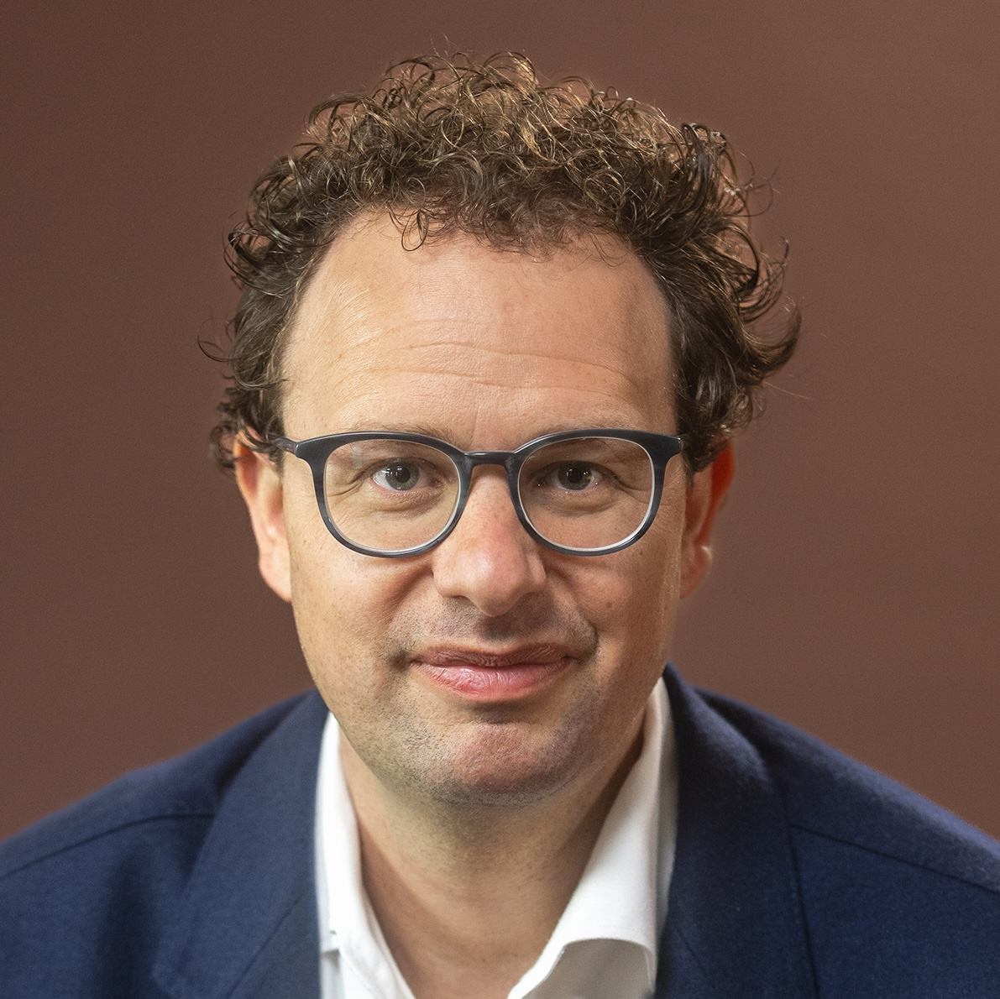
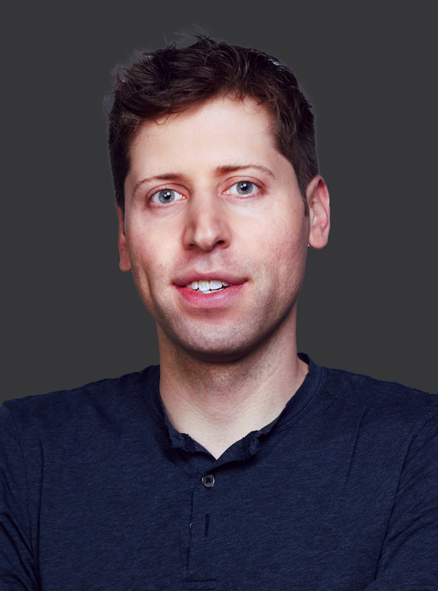
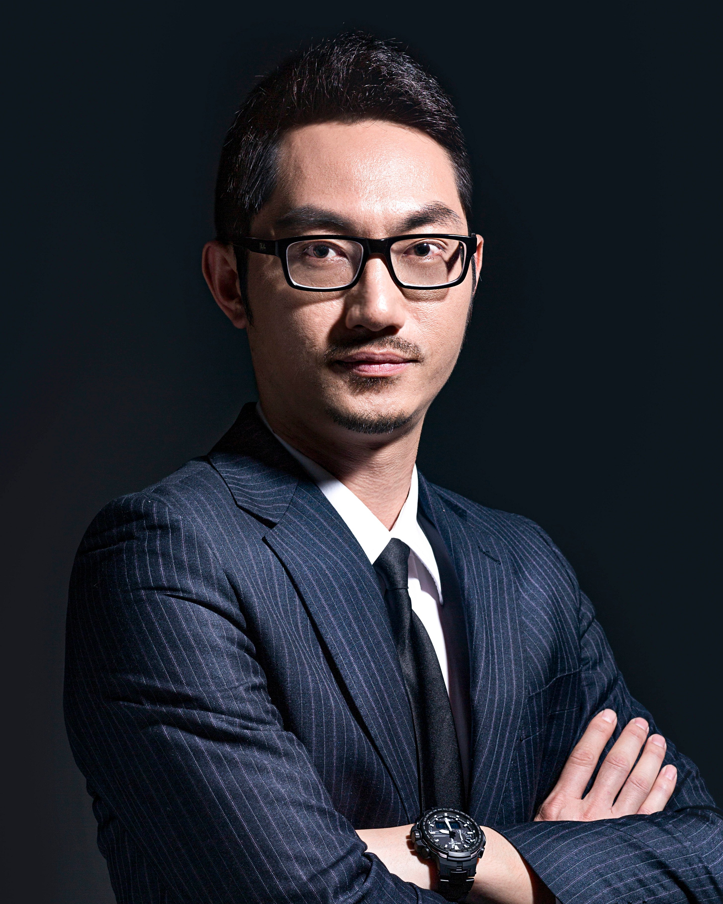
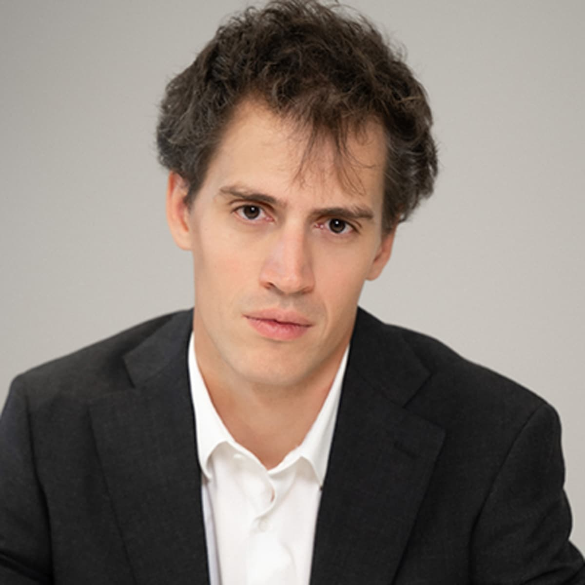
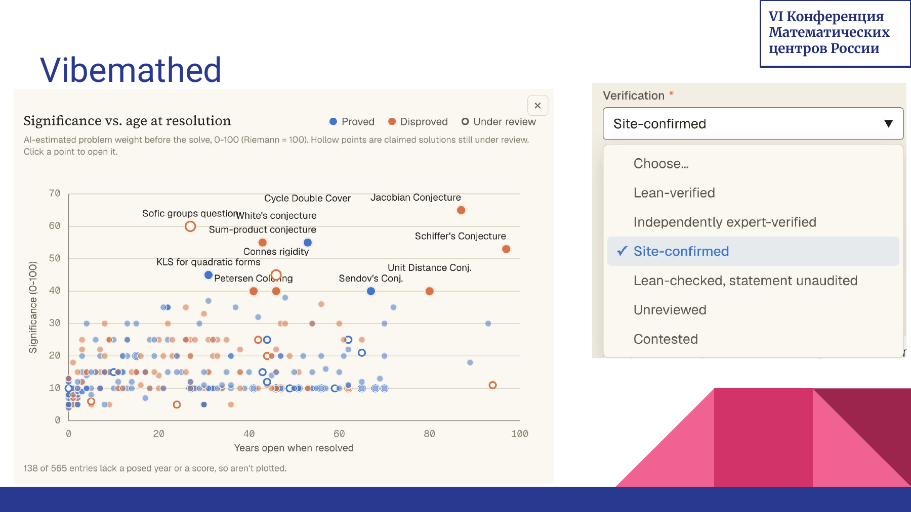

Дональд Кнут, февраль 2026 Claude Opus 4.6 решил открытую задачу, над которой Кнут работал несколько недель.
Решение проверили независимо и формализовали в Lean.
Якобиан постоянен: \(\det J_F\equiv -2\). Но отображение не инъективно:
\[
\begin{aligned}
F(0,0,-\tfrac14)&=F(1,-\tfrac32,\tfrac{13}{2})\\
&=F(-1,\tfrac32,\tfrac{13}{2})=(-\tfrac14,0,0).
\end{aligned}
\]
Гипотеза Диница — Гарга — Гёманса
Дробный поток может делить груз между маршрутами. Можно ли всегда превратить его в неделимый, не повысив цену и перегрузив каждое ребро не более чем на максимальный спрос одного стока?
GPT-5.6 Pro и Дмитрий Рыбин, 22 июля 2026: построен небольшой явный контрпример.
Дробный поток: цена 58. Любой неделимый: при допустимой перегрузке ≤ 15 цена не меньше 60.
«Более двух третей нулей дзета-функции Римана лежат на критической прямой».
Зачем вообще учить LLM математике?
Пять самых дорогих независимых разработчиков языковых моделей · публичные оценки на 1 сентября 2026 года
1

Anthropic
$965 млрд
Дарио Амодеи · CEO
2

OpenAI
$852 млрд
Сэм Альтман · CEO
3
xAI
≈ $230 млрд
Илон Маск · основатель
4

DeepSeek
≈ $74 млрд
Лян Вэньфэн · основательоткрытые веса
5

Mistral AI
≈ $23 млрд
Артур Менш · CEO
Математические способности — один из главных фронтов конкуренции между компаниями, которые вместе оцениваются более чем в $2 трлн.
Оценки частных компаний приблизительны. xAI — последняя самостоятельная оценка до объединения со SpaceX; DeepSeek и Mistral AI — оценки обсуждаемых сделок.
Vibemathed: карта математических результатов
Задачи можно сравнивать по значимости и возрасту — но результат имеет смысл только вместе со статусом проверки.

Уровень проверки
Формально проверено в Lean
Проверено независимыми экспертами
Подтверждено площадкой
Утверждение проверено в Lean, доказательство не аудировано
Ещё не проверено
Результат оспаривается
Открытия ускоряются. Новое узкое место — доверие к результату.
Лейденская декларация
2 июня 2026 · принципы ответственного применения ИИ в математике, одобренные Международным математическим союзом
Доказательство — основа математики: оно даёт не только уверенность, но и понимание.
У результата есть авторы: вместе с признанием они принимают ответственность за корректность.
Аргументы прозрачны: доказательство должно допускать независимую проверку.
Результаты оценивает сообщество: по глубине, сложности и значимости.
Ценно понимание, а не только ответ: математика развивает ясность и профессиональное суждение.
О чём поговорим
01Что ИИ уже умеет
02Заменит ли он меня
03Как ИИ меняет математику
04Зачем всё-таки учить математику
У каждого есть умный ИИ-ассистент — и он всегда готов помочь!
✨ Помогает выстроить ход рассуждений
🔍 Быстро находит самую важную информацию
💡 Предлагает идеи и помогает находить новые решения
Мы можем сосредоточиться на главном: критическом мышлении, принятии решений и проверке результатов
ИТ-индустрия меняется так же!
🤖 ИИ-модели уже пишут код лучше многих junior- и middle-разработчиков
⚡ Они делают это быстрее, дешевле и на любом языке программирования
📈 Нужно учиться и развиваться до уровня senior!
Ключевые навыки в эпоху ИИ
🗣️ Умение общаться с ИИ-моделями становится критически важным
👥 Ещё нужно развивать soft skills для взаимодействия с людьми
Сосредоточьтесь на том, что ИИ не заменит: лидерстве, архитектурных решениях и взаимодействии с людьми